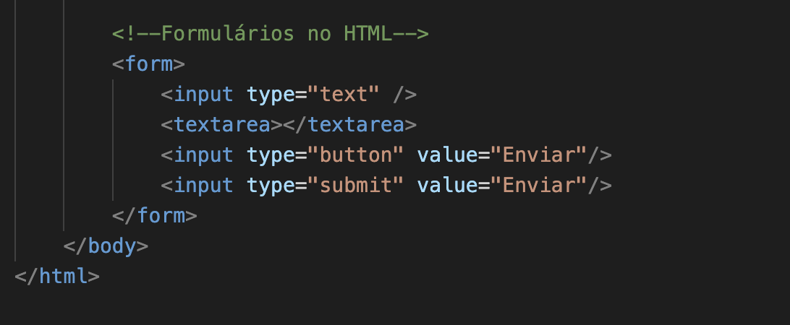

Estrutura básica do HTML
Voltar ao ÍndiceTags e Atributos
 Voltar ao ÍndiceTabelas

Voltar ao Índice
Primeira Geração:
Mark I - 1944 | Colossus - 1946
Ambos foram criados para execução de cálculos, relacionados à 2˚ Guerra Mundial. Os primeiros computadores eram muito grandes e pesavam toneladas.
Nesse período surgiu o termo BUG, pois as válvulas dos computadores esquentavam e atraiam insetos, algumas vezes elas quebravam e o termo "deu Bug" se popularizou.
Segunda Geração:
Houve um avanço de hardware das válvulas para os transistores, o que permitiu a construção de computadores menores, chamados de portáteis na época.
Terceira Geração:
Houve o desenvolvimento de computadores que usavam os Circuitos Interados, ou Chips. Foi possível o desenvolvimentos deles pela utilização de semicondutores. Um Chip contém transistores, capacitores e resistores.
Quarta Geração:
Utilização de microprocessadores. Essa geração é marcada pelos PCs, Computadores Pessoais, e pela popularização dos computadores para uso pessoal. Para isso, houve a criação de interface gráfica e dispositivos como o mouse. Nomes importantes nessa geração incluem Steve Jobs e Bill Gates.
Quinta Geração:
Marcada pelos computadores quanticos, criptomoedas, metaverso e pela inteligência artificial.
Sistemas de Comunicação
Telégrafo | Cabos Intercontinentais - 1958
Guerra Fria - 1950
Foi o período de rivalidade entre as duas potências mundiais: USA e URSS.
A DARPA surgiu nesse momento, Defense Advanced Research Projects Agency.
Licklider foi quem teorizou sobre uma rede de comunicação.
Surgiu a Arpanet, que utilizava sistema de comunicação de pacotes.
A primeira conexão estabelecida foi em 1969, entre a UCLA e SRI,, a palavra LOGIN foi enviada, mas a conexão caiu, chegando somente 'LO'.
Foi criado o TCP/IP e surgiram outras redes (milnet, nsfnet, esnet, nasa). Além disso, Tim Berners-Lee criou a World Wide Web (www), em 1989.
Grandes Nomes:
Cliente é a máquina que consome as informações vindas do servidor, eles recebem arquivos estáticos (HTML, CSS, Javascript, Imagens).
Preocupações do lado do cliente são design, responsividade e compatibilidade.
O navegador (ou browser) é o programa responsável por executar arquivos, seguem padrões W3C.
Aplicações Web são soluções criadas que possuem a internet como meio de comunicação entre Client x Server não sendo necessária a sua instalação.
Servidores são as máquinas que servem os clientes. Geralmente tem maior poder de processamento por precisarem servir a vários clientes simultaneamente. Os servidores podem ser de arquivos, segurança, streaming, e-mail e web.
Sistemas operacionais para servidores: Windows server, ubuntu, fedora, oracle linux;
Linguagem de programação é uma linguagem escrita e formal que especifica um comjunto de instruções e regras usadas para gerar programas.
Server-side: PHP, Ruby, JavaScript, Java, C#;
Client-side: JavaScript;